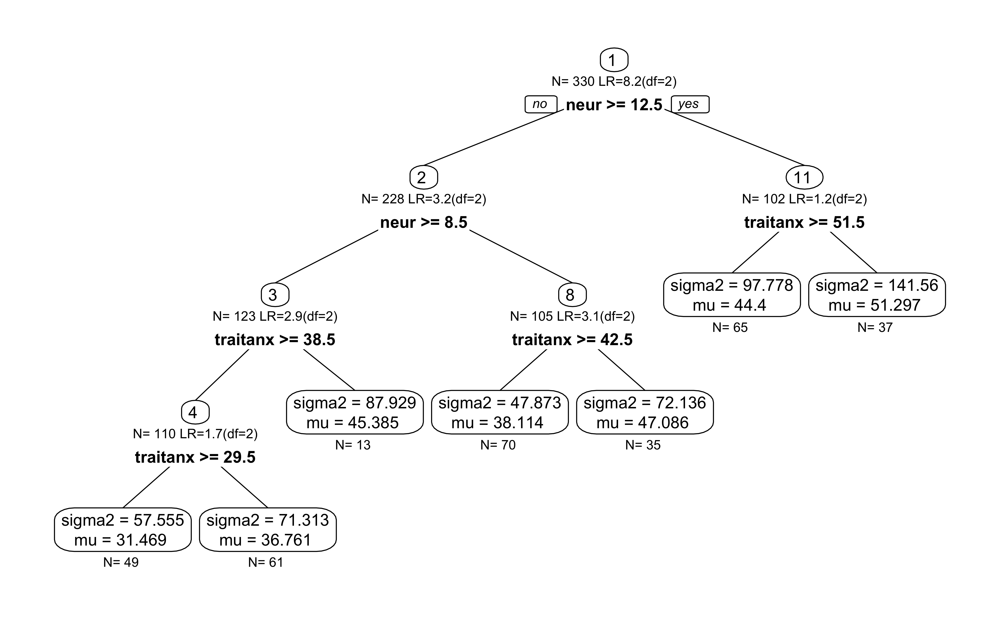

score-based-tests.RmdLoad affect dataset from the psychTools package. These are data from two studies conducted in the Personality, Motivation and Cognition Laboratory at Northwestern University to study affect dimensionality and the relationship to various personality dimensions.
library(psychTools)
data(affect)
affect$Film <- as.ordered(affect$Film)
tree.data <- affect[,c("state1","Film","neur","ext","lie","traitanx","PA1","PA2")]
#tree.data <- affect[,c("state1","neur")]
knitr::kable(head(tree.data))| state1 | Film | neur | ext | lie | traitanx | PA1 | PA2 |
|---|---|---|---|---|---|---|---|
| 22 | 3 | 9 | 18 | 3 | 24 | 26 | 7 |
| 40 | 3 | 12 | 16 | 1 | 41 | 10 | 5 |
| 44 | 3 | 5 | 6 | 2 | 37 | 4 | 3 |
| 40 | 3 | 15 | 12 | 3 | 54 | 1 | 0 |
| 67 | 3 | 2 | 14 | 3 | 39 | 7 | 16 |
| 38 | 1 | 15 | 6 | 5 | 51 | 5 | 2 |
Here, we create a simple SEM with a single observed variable. No latent variables - only two parameters: mean of state1 and variance of state1.
library(OpenMx)
#> To take full advantage of multiple cores, use:
#> mxOption(key='Number of Threads', value=parallel::detectCores()) #now
#> Sys.setenv(OMP_NUM_THREADS=parallel::detectCores()) #before library(OpenMx)
manifests<-c("state1")
latents<-c()
model <- mxModel("Simple Model",
type="RAM",
manifestVars = manifests,
latentVars = latents,
mxPath(from="one",to=manifests, free=c(TRUE), value=c(1.0) , arrows=1, label=c("mu") ),
mxPath(from=manifests,to=manifests, free=c(TRUE), value=c(1.0) , arrows=2, label=c("sigma2") ),
mxData(tree.data, type = "raw")
);
result <- mxRun(model)
#> Running Simple Model with 2 parameters
summary(result)
#> Summary of Simple Model
#>
#> free parameters:
#> name matrix row col Estimate Std.Error A
#> 1 sigma2 S state1 state1 115.52726 8.9937424
#> 2 mu M 1 state1 40.83152 0.5916777
#>
#> Model Statistics:
#> | Parameters | Degrees of Freedom | Fit (-2lnL units)
#> Model: 2 328 2503.837
#> Saturated: 2 328 NA
#> Independence: 2 328 NA
#> Number of observations/statistics: 330/330
#>
#> Information Criteria:
#> | df Penalty | Parameters Penalty | Sample-Size Adjusted
#> AIC: 1847.8366 2507.837 2507.873
#> BIC: 601.7342 2515.435 2509.091
#> CFI: NA
#> TLI: 1 (also known as NNFI)
#> RMSEA: 0 [95% CI (NA, NA)]
#> Prob(RMSEA <= 0.05): NA
#> To get additional fit indices, see help(mxRefModels)
#> timestamp: 2020-04-21 20:41:58
#> Wall clock time: 0.06369591 secs
#> optimizer: CSOLNP
#> OpenMx version number: 2.17.3
#> Need help? See help(mxSummary)Use score-based tests to create the tree.
library(semtree)
ctrl = semtree.control(method="score", bonferroni = TRUE)
tree = semtree(model=result, data=tree.data, control=ctrl)
#> ✔ Tree construction finished [took 4s].Now let us plot the tree. We obtained a tree with two major predictors neur and traitanx.
plot(tree)